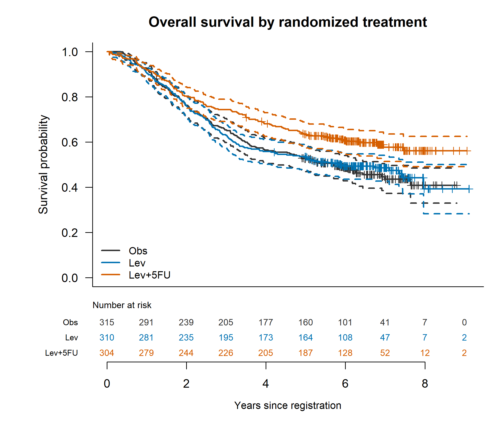
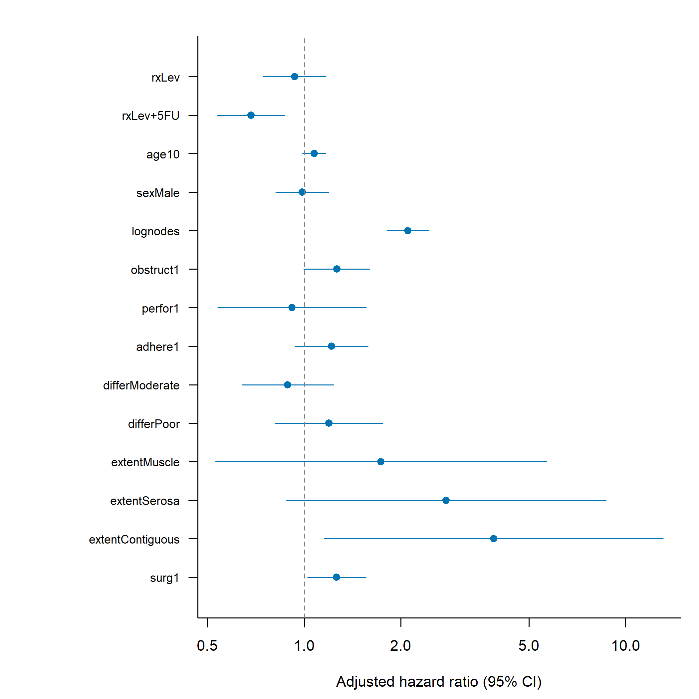
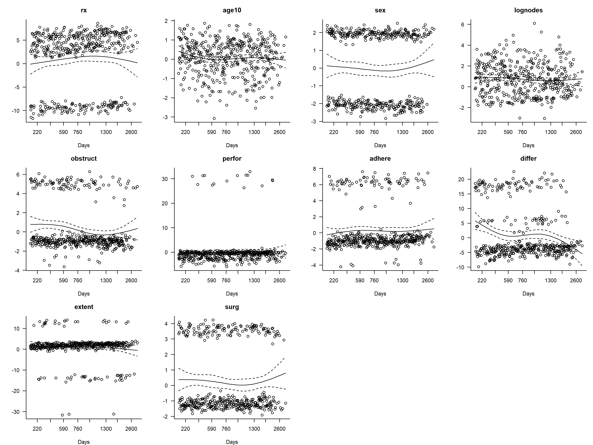
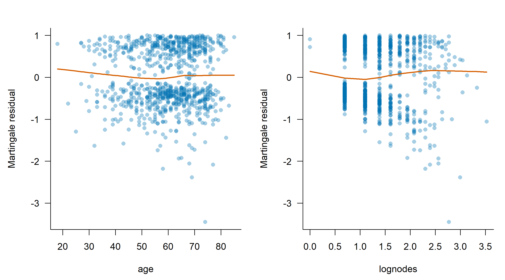
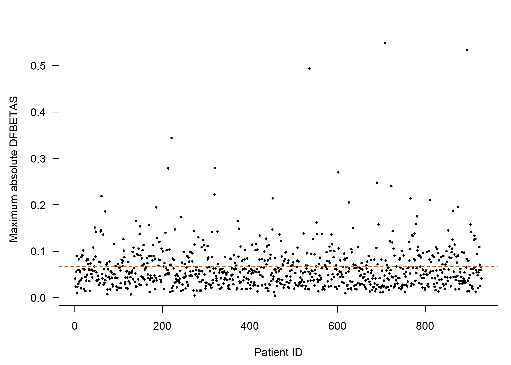
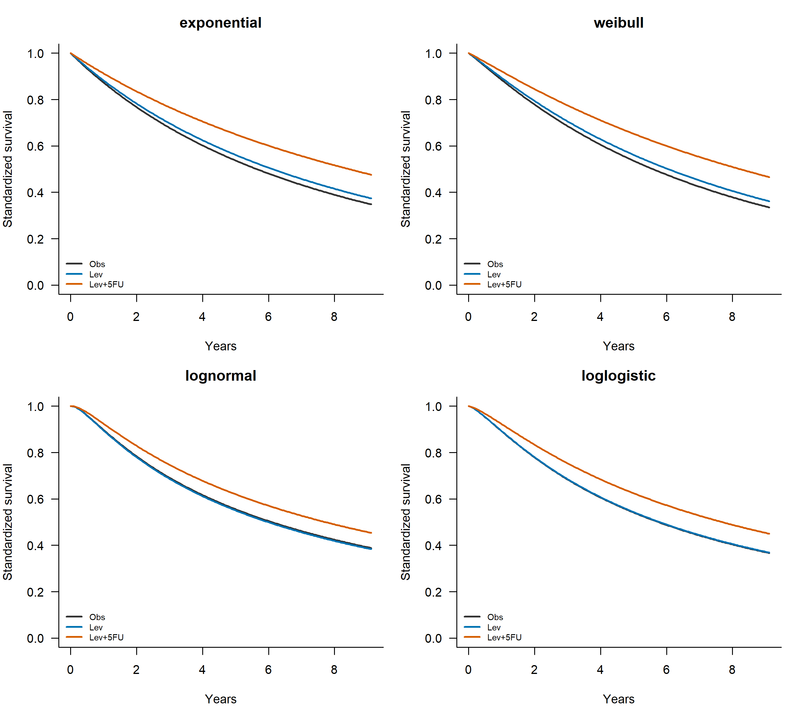
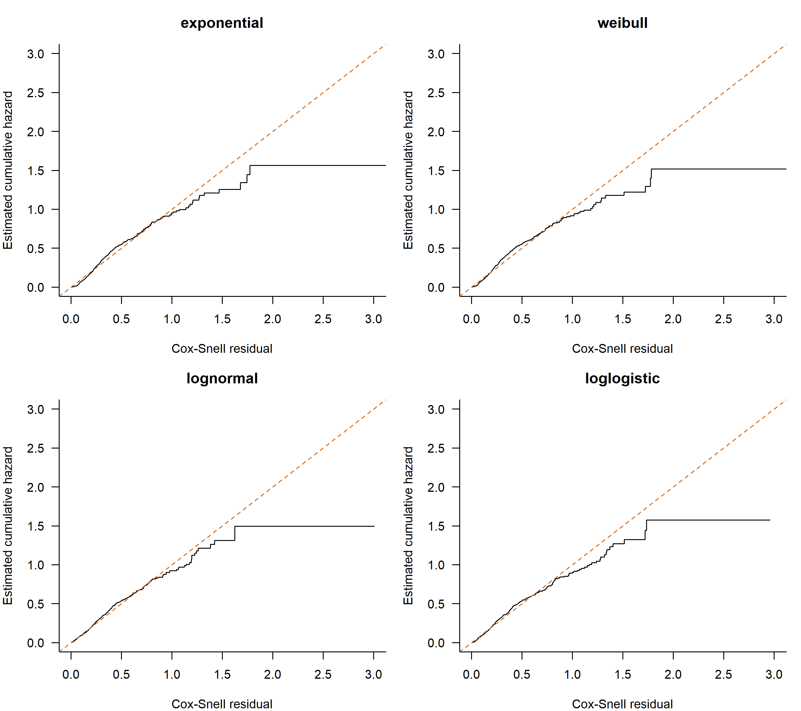
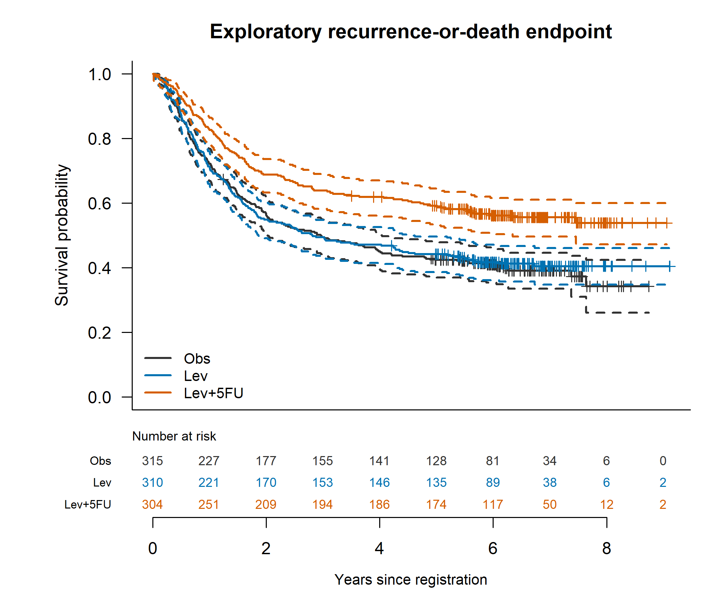

Reproducible educational secondary analysis of survival::colon. Historical treatment assignments are not current clinical recommendations.
The primary endpoint is all-cause death (etype=2), with status=1 indicating death and status=0 right censoring. Each patient contributes once. Time is recorded in days; plots use 365.25 days per year. The dataset does not provide enough metadata to independently verify every aspect of the trial time origin; registration is the working interpretation.
The exploratory recurrence-or-death endpoint uses the earliest paired follow-up time and an event only if recurrence or death is observed at that time. Follow-up is conservatively censored at the shorter endpoint window. This reconstructed composite is not a verified protocol-defined DFS endpoint. Recurrence-only Kaplan-Meier is not interpreted as cumulative recurrence incidence in the presence of competing death.
| endpoint | patients | events | censored |
|---|---|---|---|
| Overall survival | 929 | 452 | 477 |
| Reconstructed recurrence-or-death | 929 | 506 | 423 |
| total | complete_cases | excluded | node_disagreements |
|---|---|---|---|
| 929 | 888 | 41 | 12 |
Unadjusted OS Kaplan-Meier estimates use log-log 95% confidence intervals; the global log-rank test compares three randomized groups. Pairwise tests are secondary and Holm-adjusted. The adjusted Cox model uses Efron ties and complete cases, with prespecified treatment, age per 10 years, log(1 + positive nodes), sex, obstruction, perforation, adherence, differentiation, local extent and surgery-to-registration category. No stepwise selection is used. node4 is excluded because documentation identifies discrepancies with nodes.
Exponential, Weibull, log-normal and log-logistic AFT models use the identical complete-case cohort and covariates. AIC/BIC compare these likelihood-based models with each other; Cox partial-likelihood AIC is not compared with AFT AIC. AFT time ratios differ from Cox hazard ratios; the intercept is not a covariate time ratio. Standardized curves average predictions over observed covariates and have no uncertainty bands.
| variable | level | Obs | Lev | Lev.5FU |
|---|---|---|---|---|
| Patients | 315 | 310 | 304 | |
| age | Median [IQR] | 60.0 [53.0, 68.0] | 61.0 [53.0, 69.0] | 62.0 [52.0, 70.0] |
| age | Missing | 0 | 0 | 0 |
| nodes | Median [IQR] | 2.0 [1.0, 5.0] | 2.0 [1.0, 5.0] | 2.0 [1.0, 4.0] |
| nodes | Missing | 3 | 6 | 9 |
| sex | Female | 149 (47.3%) | 133 (42.9%) | 163 (53.6%) |
| sex | Male | 166 (52.7%) | 177 (57.1%) | 141 (46.4%) |
| obstruct | 0 | 252 (80.0%) | 247 (79.7%) | 250 (82.2%) |
| obstruct | 1 | 63 (20.0%) | 63 (20.3%) | 54 (17.8%) |
| perfor | 0 | 306 (97.1%) | 300 (96.8%) | 296 (97.4%) |
| perfor | 1 | 9 (2.9%) | 10 (3.2%) | 8 (2.6%) |
| adhere | 0 | 268 (85.1%) | 261 (84.2%) | 265 (87.2%) |
| adhere | 1 | 47 (14.9%) | 49 (15.8%) | 39 (12.8%) |
| differ | Well | 27 (8.6%) | 37 (11.9%) | 29 (9.5%) |
| differ | Moderate | 229 (72.7%) | 219 (70.6%) | 215 (70.7%) |
| differ | Poor | 52 (16.5%) | 44 (14.2%) | 54 (17.8%) |
| differ | 7 (2.2%) | 10 (3.2%) | 6 (2.0%) | |
| extent | Submucosa | 8 (2.5%) | 3 (1.0%) | 10 (3.3%) |
| extent | Muscle | 38 (12.1%) | 36 (11.6%) | 32 (10.5%) |
| extent | Serosa | 249 (79.0%) | 259 (83.5%) | 251 (82.6%) |
| extent | Contiguous | 20 (6.3%) | 12 (3.9%) | 11 (3.6%) |
| surg | 0 | 224 (71.1%) | 230 (74.2%) | 228 (75.0%) |
| surg | 1 | 91 (28.9%) | 80 (25.8%) | 76 (25.0%) |

| endpoint | chisq | df | p |
|---|---|---|---|
| OS | 11.68 | 2 | 0.002904 |
| treatment | years | at_risk | survival | lower | upper |
|---|---|---|---|---|---|
| rx=Obs | 1 | 291 | 0.9238 | 0.8885 | 0.9483 |
| rx=Obs | 3 | 205 | 0.6532 | 0.5977 | 0.7029 |
| rx=Obs | 5 | 160 | 0.5257 | 0.469 | 0.5792 |
| rx=Lev | 1 | 281 | 0.9065 | 0.8682 | 0.934 |
| rx=Lev | 3 | 195 | 0.629 | 0.5727 | 0.6801 |
| rx=Lev | 5 | 164 | 0.5354 | 0.4782 | 0.5891 |
| rx=Lev+5FU | 1 | 279 | 0.9178 | 0.8807 | 0.9437 |
| rx=Lev+5FU | 3 | 226 | 0.7434 | 0.6904 | 0.7888 |
| rx=Lev+5FU | 5 | 187 | 0.634 | 0.5771 | 0.6854 |
| term | HR | lower | upper | p |
|---|---|---|---|---|
| rxLev | 0.9737 | 0.7844 | 1.209 | 0.8092 |
| rxLev+5FU | 0.6896 | 0.5464 | 0.8703 | 0.001748 |
| term | HR | lower | upper | p |
|---|---|---|---|---|
| rxLev | 0.9335 | 0.7462 | 1.168 | 0.5468 |
| rxLev+5FU | 0.6837 | 0.5378 | 0.8691 | 0.001899 |
| age10 | 1.074 | 0.9901 | 1.166 | 0.08532 |
| sexMale | 0.9873 | 0.8157 | 1.195 | 0.8957 |
| lognodes | 2.1 | 1.807 | 2.441 | 4.253e-22 |
| obstruct1 | 1.263 | 0.9971 | 1.6 | 0.05292 |
| perfor1 | 0.917 | 0.5388 | 1.561 | 0.7494 |
| adhere1 | 1.216 | 0.936 | 1.58 | 0.143 |
| differModerate | 0.8887 | 0.6388 | 1.236 | 0.4838 |
| differPoor | 1.195 | 0.8121 | 1.758 | 0.3661 |
| extentMuscle | 1.734 | 0.53 | 5.671 | 0.3629 |
| extentSerosa | 2.766 | 0.8813 | 8.682 | 0.08126 |
| extentContiguous | 3.883 | 1.154 | 13.07 | 0.02845 |
| surg1 | 1.262 | 1.024 | 1.554 | 0.02877 |

HR < 1 indicates a lower instantaneous death hazard relative to the reference level, conditional on model covariates and proportional hazards. Randomized-treatment contrasts have a stronger causal basis than patient-characteristic associations, but complete-case exclusions and model assumptions limit causal interpretation. Prognostic associations do not establish causality or validated individual risk prediction.
| term | chisq | df | p |
|---|---|---|---|
| rx | 3.211 | 2 | 0.2007 |
| age10 | 1.028 | 1 | 0.3107 |
| sex | 0.1356 | 1 | 0.7127 |
| lognodes | 2.879 | 1 | 0.08974 |
| obstruct | 7.233 | 1 | 0.007156 |
| perfor | 0.6895 | 1 | 0.4063 |
| adhere | 0.01459 | 1 | 0.9039 |
| differ | 17.68 | 2 | 0.0001451 |
| extent | 7.055 | 3 | 0.07017 |
| surg | 0.01134 | 1 | 0.9152 |
| GLOBAL | 40.46 | 14 | 0.0002163 |
The global PH test yields p=0.0002163. Obstruction and differentiation show evidence against PH, so the common-HR model requires caution. A diagnostic-driven exploratory model stratifies baseline hazards by these factors; it retains treatment estimates but does not estimate their common prognostic HRs. Log-normal has the lowest candidate AFT AIC (7692.56).
| term | HR | lower | upper | p |
|---|---|---|---|---|
| rxLev | 0.9356 | 0.7475 | 1.171 | 0.5611 |
| rxLev+5FU | 0.6995 | 0.5503 | 0.8891 | 0.0035 |
| age10 | 1.089 | 1.003 | 1.183 | 0.04192 |
| sexMale | 0.9608 | 0.7932 | 1.164 | 0.683 |
| lognodes | 2.104 | 1.808 | 2.447 | 5.5e-22 |
| perfor1 | 0.9511 | 0.5567 | 1.625 | 0.8544 |
| adhere1 | 1.231 | 0.9461 | 1.601 | 0.1217 |
| extentMuscle | 1.728 | 0.528 | 5.654 | 0.3659 |
| extentSerosa | 2.842 | 0.9052 | 8.922 | 0.07357 |
| extentContiguous | 4.206 | 1.25 | 14.15 | 0.02034 |
| surg1 | 1.285 | 1.043 | 1.583 | 0.01837 |
Schoenfeld tests and plots assess proportional hazards; a large p-value does not prove the assumption. Examine term-specific and global results together. The prespecified two-year treatment interaction and treatment-stratified model are exploratory sensitivity analyses; the latter has no common treatment HR. Martingale smooths and spline comparisons assess continuous-variable functional form. DFBETAS flags prompt review rather than automatic removal. Apparent concordance is not externally validated performance.



| model | AIC |
|---|---|
| Linear transformed covariates | 5420 |
| Natural splines | 5420 |
| term | HR | lower | upper | p |
|---|---|---|---|---|
| age10 | 1.076 | 0.9875 | 1.173 | 1.674 |
| sexMale | 0.9893 | 0.8139 | 1.202 | -0.1084 |
| lognodes | 2.111 | 1.812 | 2.46 | 9.578 |
| obstruct1 | 1.263 | 0.9815 | 1.625 | 1.815 |
| perfor1 | 0.9203 | 0.5511 | 1.537 | -0.3174 |
| adhere1 | 1.217 | 0.9214 | 1.608 | 1.384 |
| differModerate | 0.8841 | 0.6325 | 1.236 | -0.7212 |
| differPoor | 1.194 | 0.7936 | 1.797 | 0.8513 |
| extentMuscle | 1.735 | 0.5254 | 5.732 | 0.9042 |
| extentSerosa | 2.76 | 0.8671 | 8.783 | 1.719 |
| extentContiguous | 3.888 | 1.118 | 13.52 | 2.136 |
| surg1 | 1.261 | 1.02 | 1.559 | 2.146 |
| rxObs:strata(period)0-2 years | 1.193 | 0.8412 | 1.691 | 0.9893 |
| rxLev:strata(period)0-2 years | 1.263 | 0.8879 | 1.796 | 1.299 |
| rxLev+5FU:strata(period)0-2 years | NA | NA | NA | NA |
| rxObs:strata(period)After 2 years | 1.736 | 1.244 | 2.422 | 3.247 |
| rxLev:strata(period)After 2 years | 1.451 | 1.024 | 2.055 | 2.092 |
| rxLev+5FU:strata(period)After 2 years | NA | NA | NA | NA |
| distribution | n | events | logLik | parameters | AIC | BIC | scale | delta_AIC | akaike_weight |
|---|---|---|---|---|---|---|---|---|---|
| lognormal | 888 | 430 | -3830 | 16 | 7693 | 7769 | 1.276 | 0 | 0.9992 |
| loglogistic | 888 | 430 | -3837 | 16 | 7707 | 7783 | 0.7357 | 14.23 | 0.0008111 |
| weibull | 888 | 430 | -3858 | 16 | 7747 | 7824 | 0.9338 | 54.92 | 1.188e-12 |
| exponential | 888 | 430 | -3859 | 15 | 7748 | 7820 | 1 | 55.43 | 9.169e-13 |
| distribution | term | time_ratio | lower | upper | p |
|---|---|---|---|---|---|
| exponential | (Intercept) | 37200 | 10460 | 132400 | 2.191e-59 |
| exponential | rxLev | 1.085 | 0.8671 | 1.357 | 0.477 |
| exponential | rxLev+5FU | 1.495 | 1.177 | 1.9 | 0.0009929 |
| exponential | age10 | 0.9308 | 0.8575 | 1.01 | 0.08657 |
| exponential | sexMale | 1.011 | 0.8349 | 1.223 | 0.9133 |
| exponential | lognodes | 0.4693 | 0.4041 | 0.545 | 3.809e-23 |
| exponential | obstruct1 | 0.8063 | 0.6366 | 1.021 | 0.07426 |
| exponential | perfor1 | 1.075 | 0.631 | 1.83 | 0.7909 |
| exponential | adhere1 | 0.8142 | 0.6265 | 1.058 | 0.1242 |
| exponential | differModerate | 1.135 | 0.8156 | 1.579 | 0.453 |
| exponential | differPoor | 0.856 | 0.5817 | 1.26 | 0.4302 |
| exponential | extentMuscle | 0.5553 | 0.1698 | 1.816 | 0.3305 |
| exponential | extentSerosa | 0.3476 | 0.1108 | 1.091 | 0.07008 |
| exponential | extentContiguous | 0.257 | 0.07639 | 0.8649 | 0.02821 |
| exponential | surg1 | 0.799 | 0.6487 | 0.9841 | 0.03477 |
| weibull | (Intercept) | 31570 | 9497 | 104900 | 4.125e-64 |
| weibull | rxLev | 1.083 | 0.8788 | 1.335 | 0.4544 |
| weibull | rxLev+5FU | 1.473 | 1.177 | 1.844 | 0.0007261 |
| weibull | age10 | 0.9341 | 0.865 | 1.009 | 0.08211 |
| weibull | sexMale | 1.01 | 0.8448 | 1.207 | 0.9134 |
| weibull | lognodes | 0.4857 | 0.4198 | 0.562 | 2.784e-22 |
| weibull | obstruct1 | 0.8174 | 0.655 | 1.02 | 0.07448 |
| weibull | perfor1 | 1.067 | 0.6487 | 1.755 | 0.7983 |
| weibull | adhere1 | 0.824 | 0.6448 | 1.053 | 0.1218 |
| weibull | differModerate | 1.127 | 0.8281 | 1.535 | 0.4462 |
| weibull | differPoor | 0.8619 | 0.6007 | 1.237 | 0.4196 |
| weibull | extentMuscle | 0.5746 | 0.1899 | 1.739 | 0.3266 |
| weibull | extentSerosa | 0.3692 | 0.1266 | 1.076 | 0.06799 |
| weibull | extentContiguous | 0.2786 | 0.08937 | 0.8688 | 0.02763 |
| weibull | surg1 | 0.8097 | 0.6661 | 0.9844 | 0.03421 |
| lognormal | (Intercept) | 28790 | 10280 | 80650 | 5.189e-85 |
| lognormal | rxLev | 0.9819 | 0.7816 | 1.234 | 0.8753 |
| lognormal | rxLev+5FU | 1.267 | 1.001 | 1.603 | 0.04883 |
| lognormal | age10 | 0.8989 | 0.8296 | 0.9741 | 0.009304 |
| lognormal | sexMale | 1.003 | 0.8286 | 1.214 | 0.9768 |
| lognormal | lognodes | 0.4645 | 0.3955 | 0.5456 | 9.153e-21 |
| lognormal | obstruct1 | 0.6821 | 0.5379 | 0.8649 | 0.001586 |
| lognormal | perfor1 | 1.27 | 0.7368 | 2.188 | 0.3899 |
| lognormal | adhere1 | 0.8219 | 0.6268 | 1.078 | 0.1561 |
| lognormal | differModerate | 1.195 | 0.8648 | 1.651 | 0.2804 |
| lognormal | differPoor | 0.7414 | 0.506 | 1.086 | 0.1247 |
| lognormal | extentMuscle | 0.7183 | 0.2927 | 1.763 | 0.4702 |
| lognormal | extentSerosa | 0.4135 | 0.176 | 0.9713 | 0.04268 |
| lognormal | extentContiguous | 0.2621 | 0.09991 | 0.6877 | 0.00651 |
| lognormal | surg1 | 0.7693 | 0.6226 | 0.9507 | 0.01516 |
| loglogistic | (Intercept) | 25200 | 8494 | 74740 | 1.466e-74 |
| loglogistic | rxLev | 1.006 | 0.8059 | 1.257 | 0.9553 |
| loglogistic | rxLev+5FU | 1.336 | 1.059 | 1.687 | 0.01476 |
| loglogistic | age10 | 0.9116 | 0.8415 | 0.9875 | 0.0233 |
| loglogistic | sexMale | 1.021 | 0.8459 | 1.232 | 0.8309 |
| loglogistic | lognodes | 0.4623 | 0.3953 | 0.5406 | 4.183e-22 |
| loglogistic | obstruct1 | 0.7331 | 0.577 | 0.9314 | 0.01104 |
| loglogistic | perfor1 | 1.206 | 0.7204 | 2.018 | 0.4766 |
| loglogistic | adhere1 | 0.7933 | 0.6091 | 1.033 | 0.08588 |
| loglogistic | differModerate | 1.194 | 0.8674 | 1.644 | 0.2766 |
| loglogistic | differPoor | 0.7771 | 0.5305 | 1.138 | 0.1953 |
| loglogistic | extentMuscle | 0.6779 | 0.2575 | 1.784 | 0.431 |
| loglogistic | extentSerosa | 0.4007 | 0.1583 | 1.014 | 0.05362 |
| loglogistic | extentContiguous | 0.2484 | 0.08862 | 0.6963 | 0.008086 |
| loglogistic | surg1 | 0.7941 | 0.6451 | 0.9774 | 0.02959 |


Lower AIC reflects relative fit among the candidate models, not proof of correct tails or clinical validity. Inspect Cox-Snell departures and avoid unsupported extrapolation beyond observed follow-up. Confidence intervals are pointwise model-based intervals; this project does not make multiplicity-adjusted prognostic claims.

Historical public trial data; unavailable protocol metadata and modern biomarkers; missing covariates handled by complete-case analysis rather than imputation; sparse categories; noninformative censoring assumptions; known node-field inconsistencies; multiple exploratory analyses; no external validation. Results should be interpreted as an educational secondary analysis, not a confirmatory trial reanalysis or a clinical prediction tool.
Official colon documentation; survreg documentation. See sessionInfo.txt, manifest.csv and validation.txt. CSV tables retain full precision; display formatting is handled by the R Markdown report.